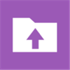
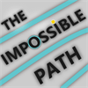
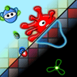
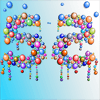

Hello
I am a software engineer with great interest for design and cognitive psychology. Since 2011, I have published 10+ apps/games for Windows Phone, Android & iOS featured by Microsoft in 150+ countries.
Apps & Games
-
 Inchy
Inchy -
Folder Upload BetaUpload and backup entire folders like screenshots and whatsapp folders to OneDrive.❝ I thought screenshots backed up automatically with OneDrive, but I was wrong and now realizing how many screenshots I lost before my last reset. But I am glad to have found this app. Thanks for your support! ❞

-  The Impossible Path
- DesignTile
- Spookies
- Flipit & Guesit
-  Dodger
-  Fifty Five
Experiments
Write about Magmul...